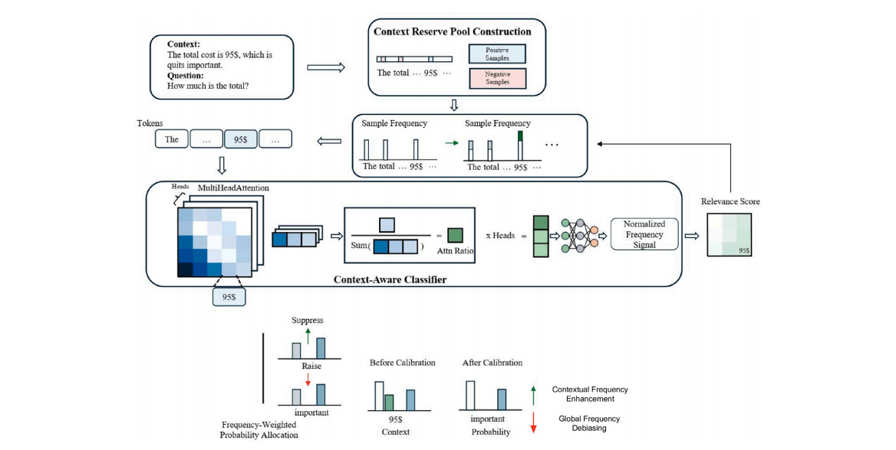

FreqAlign: Bidirectional Frequency Alignment for Mitigating Contextual Hallucinations in LLM-based Extractive QA
Knowledge-Based Systems, 2026 First AuthorSCI Q1
A decoding-time calibration method that uses attention-frequency signals to emphasize relevant low-frequency entities and numbers while suppressing unrelated high-frequency tokens. Across six extractive QA benchmarks, it reduces entity replacement and numeric errors by 59% and 66%, with only 3.2% extra inference latency.